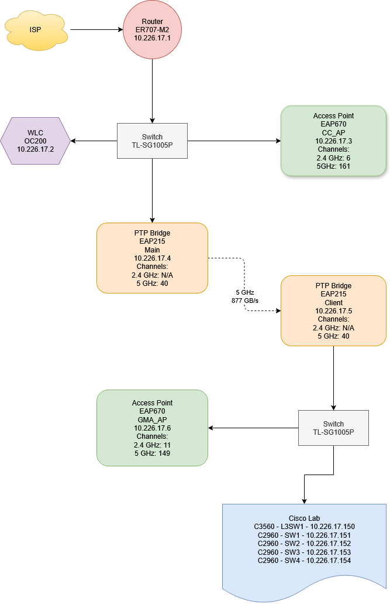

This portfolio documents my home network details, built to extend Wi-Fi to an adjacent building using TP-Link Omada as well as a Cisco Lab for CCNA practice, showcasing my hands-on networking skills.
Network Diagram

Components
ER707-M2 Router (10.226.17.1)
Model: ER707-M2 v1.20
Firmware: 1.2.3 Build 20240822 Rel.52946
Role: Primary router, ISP connection
Config: DHCP server, NAT enabled, 802.1r
Network: 10.226.17.0/24, 10.226.17.1-50 reserved from DHCP pool